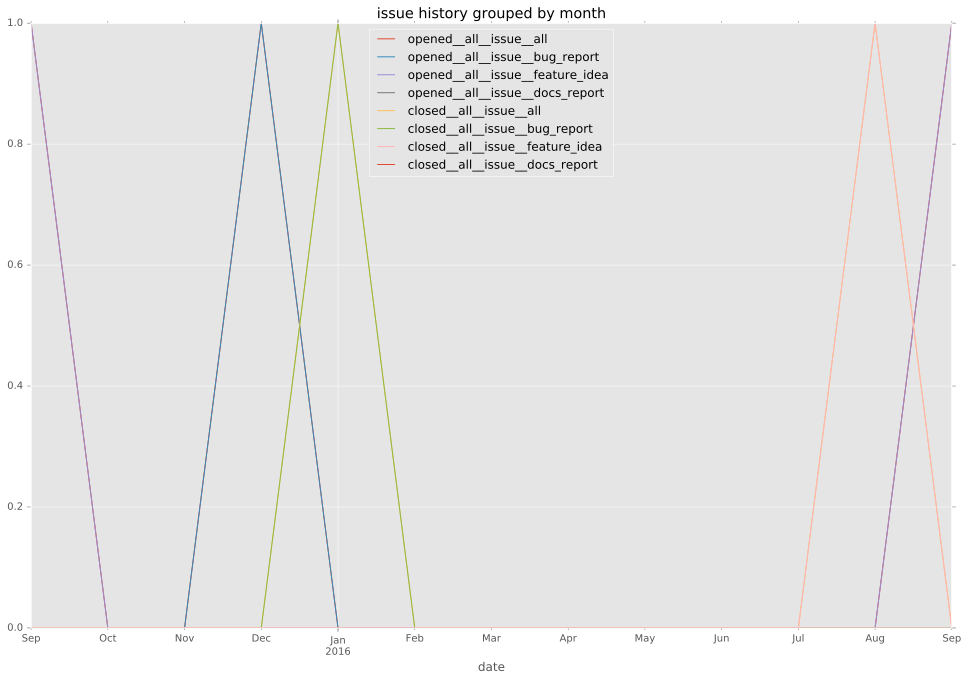
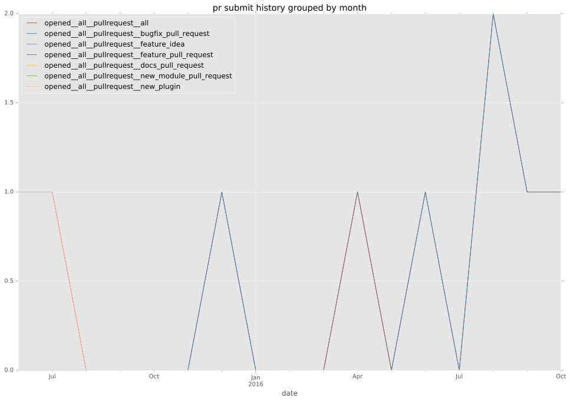

total issue counts
feature pull request: 1
pullrequest: 7
bugfix pull request: 2
feature idea: 1
issue: 2
new plugin: 4
bug report: 1
issue history

pullrequest history


days open by issue type
bugfix pull request
count: 3
std: 117.202104645
min: 7
max: 210
median: 7.0
mean: 74.6666666667
all
count: 12
std: 98.1996651849
min: 0
max: 323
median: 41.5
mean: 71.5833333333
pullrequest
count: 0
std: nan
min: nan
max: nan
median: nan
mean: nan
feature pull request
count: 2
std: 0.0
min: 14
max: 14
median: 14.0
mean: 14.0
feature idea
count: 1
std: nan
min: 323
max: 323
median: 323.0
mean: 323.0
issue
count: 0
std: nan
min: nan
max: nan
median: nan
mean: nan
new plugin
count: 5
std: 35.9485743806
min: 0
max: 101
median: 50.0
mean: 48.4
bug report
count: 1
std: nan
min: 42
max: 42
median: 42.0
mean: 42.0
closures grouped by total days open